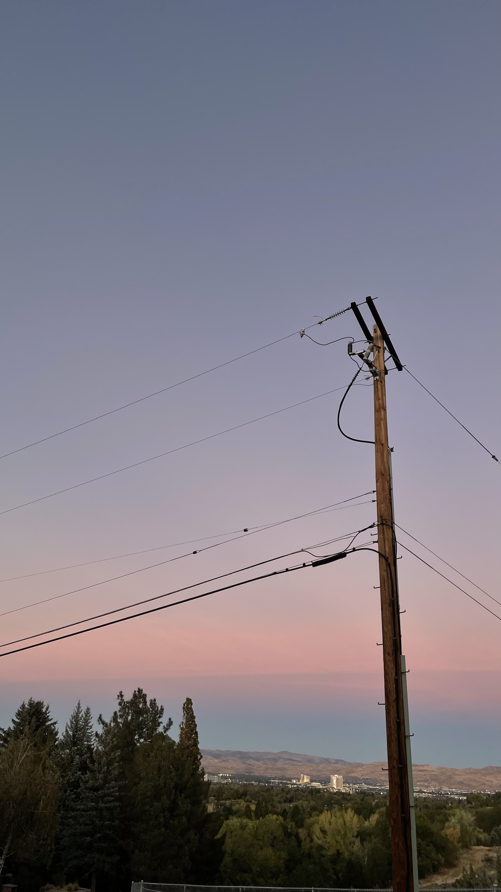

Candy Among Stones
February 7, 2025

While scrolling on Instagram, I came across a collection of panels telling a story of a lone wanderer walking along a path. On each side of the path, there are heaps of stones, and among them is a singular piece of candy. The piece of candy is one of those rock candies that blend in with all the stones. The task is to find the candy.
And so the wanderer goes, bending down and licking every stone there is in hopes of detecting a slight sweetness in one. After what could have been dozens, hundreds, thousands—the exact number was lost hours ago—the wanderer wondered if he had already licked the candy but couldn’t distinguish it from all the previous stones. Or the candy was still among the pile, waiting to be found—he could never be sure.
Perhaps it’s worth just picking a stone and going with it. Does it really matter if he found the candy? The candy would only be temporary, and he’d wander the path again, the stones dull in comparison.
In a similar sense, it might be worth picking one way and going with it, even given the impossible task of finding the absolute best path forward. Maybe there is an idyllic, sweet, candy-like path that is perfect, but there’s also value in carving a path and finding the beauty in it.
This way of thinking could be dangerous, like what Setsuko does with her marbles. I’m not saying that one should blaze through a path without thinking, because some paths are objectively wrong. But at some point, life is about what you make of it, rather than holding a rigid set of expectations about how a perfect life should go.
1. Abandoned Pastimes
2. Seniority
3. Best Possible Outcome
Abandoned Pastimes
Wandering the path, I have a lot of hobbies that I used to do but don’t engage in anymore, though I’m only now realizing how much of an impact they’ve had on my life.
Most obvious is Scratch, where I hold at least three burner accounts, each one created because of a desire to create the “perfect” image. Even though I was new to learning how to code, I felt like I wasn’t allowed to show that I didn’t know what I was doing. I think part of this is because I grew up thinking that I couldn’t look ignorant in front of others—looking ignorant is actually one of my biggest fears, because I was raised to put academics at the forefront. But if I can’t even maintain this forefront, then I have nothing to say. It made learning new things and trying new things extremely difficult, because well, you’re inevitably going to look a little silly when doing something for the first time.
Scratch is also where I first conceptualized the idea of a “dream school,” not knowing what the future was going to hold or not realizing that this dream was possible to accomplish. Unknowingly, I had this dream of mine since elementary school, and that I was going to spend the next decade working towards it.
For some time, I also really liked to write comics based on little stories my friend group made in school. This hobby was also where my perfectionism showed through. At first, I was making series of comics for fun—”This Man CLEARLY has problems,” chronicling a man who has trouble accomplishing basic tasks; “Grandpa’s Life Lessons,” following a traditionalist, authoritarian(?) grandfather who tries lecturing his grandchildren; “The Dumb Robber,” recording a robber (in a very prominent tophat) putting himself in progressively worse situations while trying to escape extremely unobservant and underqualified policemen. But I eventually tried to remake these series because the dialogue wasn’t interesting enough, or the scenes weren’t drawn well enough, or the dividers weren’t straight and consistent enough. That turned out to be the prelude to the end of this hobby.
Or Line Riders too, which was how I started my YouTube channel. I merely saw DoodleChaos going viral, and as I was interested in music synchronization myself, I decided to give it a try. I had one of my videos blow up myself, gathering about 300,000 views. But eventually, this hobby stopped too, because it wasn’t new to me anymore, and I got caught up on matching the quality of my work to DoodleChaos’s.
It’s funny how all these pastimes ended for the same reason. For the things I enjoy doing now, they’ve stuck for this much time because I’ve recognized that it’s okay that not everything I make is a masterpiece. No matter how much time I have spent on an activity, there’s always more to learn.
Seniority
Graduation is about three months away, yet I’m already thinking about what to say in my graduation speech.
I’ve actually started thinking about this since last year. There is so much I want to say to everyone, especially to the nervous juniors and desperate parents. I feel a strange sense of seniority, a sense of responsibility now that my voice somehow matters a lot more just because I am associated with a well-known and respected institution.
But as honored and grateful I am for where I’ll be headed, I do not want my identity to be defined by whatever college I’m attending. I want my voice to matter regardless of where I’m attending. Of course, I understand that’s not how things are, which is kind of unfortunate. At the same time, maybe it’s good that my voice matters a lot more, because I won’t just be taken for granted.
Given the culture at our school shifting more towards hostile competitiveness, if there’s one thing that I want to leave behind, I desperately want people to understand that being kind to others and genuine passion in a topic of study is what’s important, not arbitrary numbers and crossing off a checklist of arbituary honors and activities. I recognize that these arbitrary numbers are a door to get in, and I’m not saying that they’re not important. But I think that people place too high of an emphasis on this, and only care about beating others to the point of putting them down or self-deprecating from associating one’s value with a number. Your value is not tied to a number.
You all matter. You’re going to make mistakes, but you still matter. I think a lot of people don’t fully internalize this until someone says something to them—I was certainly in this boat. It took a senior friend during my sophomore year to push me into having hope for the future. All it took was acknowledging my skills as worthy rather than something to be brushed off. A ripple effect stems from the words of one person.
When I took the AIME a few days ago, it was melancholy. It’s the last AIME I will ever take in my life, and perhaps even the last math competition ever. As the only girl taking the exam, it was even more despondent. I seriously hope that there will be more female representation in math at our school. There’s a couple people who I think are great, but one stood out to me. I was teaching how to derive a magic square at a Math Club meeting, and she would pick up my hints extremely fast. She didn’t get the steps right every time, but it was her continual effort that stuck with me. And it was also a conversation… a conversation a while ago about what year we wanted to live to. The typical silly, fun answers are maybe “to the next millennium” or “2100,” but she said “as long as I need to help people.” I thought that was a phenomenal answer.
But I could also notice her hesitation in believing in herself. I tried pointing out that she was great, but I could tell that she didn’t believe me entirely. I’ll have to keep trying.
Best Possible Outcome
Everything is going to be okay.
Even if everything feels like it's going wrong, you'll be pointed to the path you’re supposed to be on.
Like okay, I was a Roblox kid in elementary school. I thought I was hopeless. But I want people to realize that the decision is in their hands. There will be pointers on what the path is, but that is also a privilege given to you, and your responsibility to take advantage of it.
Apparently we once owned a copy of Math Blaster, and the people who developed that game also happened to be the founders of the high school I attend now. Pretty neat! Again, funny how I almost decided to not attend this school, but it was the right path for me.
Anyhow, the point is that there’s going to be rough patches. There’s going to be plot twists and nights of silent, stifled crying coupled with the feeling that the world is going to end. But all of that is going to lead to the best possible outcome.
For if it’s not the best possible outcome, what else is it going to be?
✩₊˚.⋆☾⋆⁺₊✧
That is all, consider subscribing or leaving a comment below!
Return to posts
Forty-five Squared
December 30, 2024
1. "Remember twenty-four?"
2. Competition Math
3. Not a fin bro, nor am I a fish
4. "Just trust me, you'll be fine"
"Remember twenty-four?"
When I was very little, probably in early elementary school, my dad would teach me math at home. I remember being rather ambivalent about it then, but those teachings would have a much longer-lasting impact than little-me could have predicted. It definitely put me on the path for competition math later on.
One of the fun math tricks he taught me was squaring integers that ended in 5. Take 452, for example. First, it must end in 25. Then, we take whatever precedes 5 in the integer—in this case, we have 4. Take that and multiply it by the successive integer, so in this case, we have 4⋅(4+1) = 20. Append that to the 25, and we get 452 = 2025!
Another example with 652: Ends in 25, then we take whatever precedes the 5 in the integer—so this time we have 6—multiply it by the successive integer, so 6⋅(6+1) = 42. Append the 42 to the 25 from before and we get 652 = 4225!
I was curious about whether this trick would generalize to larger values, which was what had prompted me to try 165, and then 1655. Turns out that the trick still works!
Proceeding to freak out about finding out why the trick worked
So if we have any integer that ends in 5, we can write it as a5, such that “a” represents the portion that precedes the 5. We can also write a5 = 10a+5. Squaring both sides and expanding, we get:
a52 = (10a+5)2
= 100a2 + 100a + 25
= 100(a2 + a) + 25.
This result is important, because a2 + a can be written as a(a+1), which represents the procedure in taking whatever precedes 5 and multiplying it by the successive integer. And then, what the 100 does is it shifts the result of a(a+1) to the left by two, which makes room for the tens and ones digit. Finally, the 25 is appended and fills up the tens and ones digit. Yippe!
The upcoming year is a square year, which is pretty cool! Other fun things to notice are:
(20+25)2 = 2025,
13 + 23 + 33 + 43 + 53 + 63 + 73 + 83 + 93 = 2025, and
(1+2+3+4+5+6+7+8+9)2 = 2025.
Generally, I like to notice fun numerical things, like in phone numbers, serial numbers, or codes. Another favorite is in the game 24 with a standard set of playing cards, which is another numbers-related lesson my dad taught me. Once on a road trip, I forgot to bring playing cards, so I instead played 24 using numbers on the license plates of passing cars. The numbers were random enough, although if there were zeroes or too many letters, that was another surprise element.
24 was perhaps my official introduction to playing with numbers. I remember later on, I was playing around with powers of 11 when I noticed that the first few powers had formed Pascal’s Triangle! Just writing them out in a triangle and noticing the numbers fall beautifully was amazing.
110 = 1
111 = 11
112 = 121
113 = 1331
114 = 14641
Beyond that, it kind of breaks, but it's still really cool!
I excitedly told a friend, thinking that I had discovered something novel. But then they said something along the lines of, "What, you didn’t know that already?" I don't think they intended anything malicious with that statement, but I remember feeling a little inferior. The spark of having "discovered" that trick went away.
I didn't realize it then, but in retrospect, I think that comment killed my confidence a lot. I don't remember having felt much joy learning math after that—it was just grinding chapter after chapter in the AoPS series, taking test after test with the plethora of AMC and mock exams available. Even though the concepts hidden in each problem were objectively super cool, the spark was gone.
At least for now.
Competition Math
The competition math community, at least here, can be extremely competitive. While part of that is inherent from there being a competition in the literal sense, there is a certain demographic where it is, quite unfortunately, quite common to compare kids’ scores. I'll hear people calling each other stupid just because they "sillied" or got one less question correct than someone else. I'll hear gossip about how someone had a surpringly good performance, or celebrations when another had "underperformed" in a competition.
One year, I was compared to this guy, because we were known to be neck-and-neck with each other. I got second place, which was a little unfortunate, but fine. But the parents were discussing, and it's quite common to almost... worship? Or rather, praise the parent of the kid who won. The parent of this guy proceeds to say something along the lines of, "Second place is extremely impressive for a girl!" Which uh, yikes!
That incident was when I became a lot more aware of the lack of girls in the STEM field. Later on, my friend had quit competition math, and it became a little lonely at times. With my worth tied to a score, the very philosophy I would turn against later, it kept me going—climbing higher and higher with no end in sight.
While I do see merit in comparisons, I think it could also be demotivating if used poorly. Comparisons are meant to inspire, not push down on others.
At some point, I was going to write about how we should all be like the Jack-in-the-box mascot, such that his round head represents well-roundedness, while his cone-shaped nose/hat represents one's "spike" or "main." But in the end, I don't think it matters very much. I think it's a lot more important to find things that we enjoy doing. Rather than strive to be well-rounded or have a spike, I believe it's more helpful to just do, and doing things happen to make us well-rounded or build a spike.
It's a lot more important to take action than just have empty words. For me, this realization came through participating in years of competition math. Competition math was a constant in my life, though my perspective towards it has drastically changed. Rather than a source of conflict, it is a place to connect.
Not a fin bro, nor am I a fish
In freshman year, I took Financial Literacy, and while there were important lessons about how to deal with finance, it's the life lessons that had a much larger impact on me. One day, the teacher instructed us to hold our palms out and close our eyes. When he said "up," we would point our palms up, and when he said "down," we would point our palms down. Simple enough.
When we began, I couldn't really see the point. I thought it was quite a funny game, because it was similar to Simon Says. I tried counting the rhythm at which he was saying "up" and "down," deciphering whether there was a pattern or not. After a few minutes and failing to find a discernible pattern, I wondered what the point was. Was it to test our patience, to see who would last the longest? I must've smiled then—the ones who were still going would not know how much longer they had to go. I found it entertaining to try figuring out what kind of social experiment this was.
He told us to open our eyes and began pointing out the people he would hire to his company if he had one. For one of my classmates, they were chosen because they held their hands out firmly and diligently followed his directions the whole time rather than gradually flopping his arms like a fish. To my surprise, he also pointed me out, because I would be a fun person. He mentioned how I found the fun even in the most boring of tasks. When I was puzzling out the purpose of this activity, I must have shown it on my face. That's when I realized the purpose of this experiment was to demonstrate just how much you can tell about someone based off the simplest of interactions.
And it's not really something I thought about much before, but it is a characteristic I'm proud of. Since it's relevant, in hindsight, it's probably part of what kept me going in competition math. Even though there were so many times I wanted to quit, I kept going because there was still something in me that saw the spark.
"Just trust me, you'll be fine"
There’s a lot of little things in life that have built me up to the way I am now.
When I started this blog, it was actually in the hopes of learning how to write better. But of course, it became so much more than that—it was a timeline of change, full of little lessons I picked up over the year. It was a symbol of progress as I added more elements to the blog. It was a place where I forced myself to have coherent thoughts, because I was not going to let myself release word vomit.
It had become a part of me.
In July of 2022, I started my online journal, which is similar to my posts here but a lot more disheveled. Before then, I had multiple physical journals that have barely any reasonable content I can grasp. Not that the online journal really did either, but I wrote in it so much that Google Docs literally stopped me from writing any more.
Uh... help??
Quite literally, this is the end of beginning. I think both writing in that journal and here kept me sane. Reading things from a year ago is a little sad, but it's also quite amazing how far we can come in a year. I have no idea what is going to happen in the upcoming year, but based on the many things I could tell myself a year ago, it'll all be okay.
✩₊˚.⋆☾⋆⁺₊✧
That is all, consider subscribing or leaving a comment below!
Return to posts
Defying Gravity
December 21, 2024
So if you care to find me
Look to the western sky
As someone told me lately,
"Everyone deserves a chance to fly"
2025 is not quite here yet, but it has been a year since my first blog post here! 2024 was a rollercoaster—starting on a low but relative high, slowly dipping down until it hit an all-time low in April, held on and climbed up in May, June to August were some of the best months in my life, climbed even higher in October, dipped a little in November, and ended on a high in December. Perhaps in the sense of a 2024 Wrapped, I caught Covid, started and finished Invisalign, got my first credit card, held three jobs at once during finals week, visited Boston twice, met amazing people, became an adult, totally wrecked my sleep schedule, and survived college applications! Of course, 2024 was a lot more than just that, and I am immensely grateful for those who pulled me through the lows. It was certainly a tough year in ways that I could not have imagined, but we made it through!
And now that we’re at the end, it does feel like having defied gravity. Spring semester of junior year was insane, and fall semester senior year predictably more so. There were many nights past 11pm, a span during which there was less than 4 hours of sleep for three nights and also at least two nights of two hours of sleep. I don’t think that anything like this has ever happened before, but I definitely would not advise it. Please do not do this. There are good reasons that this hadn’t happened before.
At times, I definitely felt a lot of imposter syndrome while looking at what everyone else was doing, but one of the biggest lessons I took this year was that everyone goes down their own path! I think I knew this for a while, but had never internalized it. It’s pretty much impossible to measure people to each other when everyone has their own set of stories and amazing achievements! I find it beautiful that everything works out in the end, and this year has been the epitome of that. In a way, I kind of manifested that…
I would write some reflections here, but that is for future me to do. Toodleloo!
✩₊˚.⋆☾⋆⁺₊✧
That is all, consider subscribing or leaving a comment below!
Return to posts
Myopia
November 29, 2024
Trigger warning: discussions of death
The world's a little blurry, or maybe it's my eyes
A crystal grows in my heart. For now, it feels like a sharp pain in my chest, but it’ll feel normal soon. It’ll grow and harden like it always does.
I’ve always wondered where I learned this adulting stuff from—”adulting stuff” in the sense that reality is not as nice as we’d like it to be. For most, it’s instinctual to hope that the future will be good. Parents usually don’t tell their children about the horrors of the world, about climate change, about betrayal, about the crippling economy, about war. I think that if we don't have the hope that things will eventually turn out well, then it’s very hard to keep moving forward in life.
My mom has often said that I grew up too early. I never fully understood what she meant by that, because the timing is different for everyone. I very quickly figured out that life wasn’t sunshine and rainbows all the time, and experienced insecurity, anxiety, and the realities of the impermanence of life in elementary school. But I never thought it happened too early... it's merely reality. I suppose that my parents are a lot older than most, so naturally, I’m exposed to “the adult world” earlier than others.
One time at an after-school program in third grade, some friends and I went around sharing our parents' ages. After I had shared mine, one of them said, "What?! They could be your grandparents!" I think that was when I became conscious about how old my parents were compared to others.
My parents had me quite late, and it’s honestly a miracle that I’m alive. But that also means I think about aging and the impermanence of life very frequently, at least once a day. I still remember calling them in Boston and feeling more sad afterwards, because I couldn’t help but notice the wrinkles and raspiness of my dad’s voice. My parents just… looked old. It could’ve been the camera ratios being off and altering people’s faces and voices, but still, the effect remained.
Told you not to worry, but maybe that's a lie
Back at home, I can feel them getting older. My mom can’t think as quickly as before and forgets things more often. I’m constantly reminded by my maternal grandmother, who developed Alzheimer’s. My dad develops a worsening gait, his gout growing more sensitive to trigger. His hearing deteriorates, and half of the time, I cannot tell if he pretends to hear for the sake of politeness. Sometimes, it feels like these symptoms are multiplying, accelerating into an unknown abyss.
And yet, I feel like I have to hide all this away, because it’s so hard to explain without it sounding like I’m asking for pity. I don’t want pity—I've fully accepted that things are the way they are, and I will do as much as I can to help them.
Remember not to get too close to stars, they're never gonna give you love like ours
More than half a year ago, I mentioned that I don't tend to talk about my struggles beyond what I write in these blog posts. There's been something recently that I don't think I can even really open up about here, because it's not fair to the people involved.
Said I couldn't love someone, 'cause I might break
Ghoul
I am not a Jack-o-Lantern! But I can’t help but wonder what it’s like for the pumpkin, to have its guts scooped out, to be carved, the knife twisting deeper and deeper, carving more intricate shapes, the most unnecessary cosmetic surgery humanity has seen on the face of the planet, for it to be left out on the porch for the sake of aesthetics, heart lit on fire, its jovial smile hiding what is within, only for it to rot on the porch as it hangs on to its tender days. It’s not enough, it’s not enough, it’ll never be enough and maybe you’re not enough and the world’s not fair because it never was. But you knew that already, because they’ve taught you. Because they’ve hardened you.
In Christopher Nolan’s Inception, he plays with the idea of reality through introducing layered dreams, or a dream within a dream. If you go deep enough into someone else’s dream layers, you can introduce an idea that spirals into this person’s subconsciousness. In their words, you’d perform “inception” on this person.
I won’t go into the details, because the movie is a masterpiece I think everyone should watch sometime. However, one of the main messages is reality is whatever you want it to be. There’s a scene in which an array of beds align in the room, and everyone is hooked up to an IV dripping a yellow fluid. At first, it looks like everyone laying down is afflicted with a condition, and the yellow fluid is the medicine. However, these people are actually dreaming and have chosen to live in a dream by constantly injecting themselves with a sedative. There’s a base reality below all of the layered dreams, but the dream is their reality because they choose it to be.
So I’ve wondered, would it be immoral to wake them up? I suppose they’re happy to live in a dream, but it’s also not reality. Or at least to me, living in a dream is not reality.
But if someone I loved chose to dream because they think it’s less painful to them, would it be better if I continued to protect them from reality by letting them live in a dream? Or should I wake them up and try to ease them into reality, having lived through it myself? Either way, the reality will hit them, because they must wake up eventually—it'll hit both of us.
I don’t think I could live if I knew I wasn’t living in reality.
I don't care if it's a lie
I disagree with this lyric, but whatever, it's pretty.
My mom was saying how it was important I’m good at math to avoid divorce. Okay, that’s not actually what she said—there’s a really long link chain. Basically she said that this girl fell for this guy, and she was feeling insecure about how he had an ex. To satisfy her, he tells her, “Oh, I loved her a hundred out of a hundred, but I love you a thousand out of a thousand.” She’s happy because a thousand is greater than a hundred, they get married, and then he cheats on her with the aforementioned ex and they divorce.
So stay good at math, folks!
✩₊˚.⋆☾⋆⁺₊✧
That is all, consider subscribing or leaving a comment below!
Return to posts
Brimming with Love
November 2, 2024

It's been around a month since my last blog post, so this post aligns more closely to Amalgamation in the sense that it's a collection of multiple updates!
1. Seasons Changing
2. Math Prize for Girls
3. 哎呀，变成老年人了
4. Moon Music
Seasons Changing
This autumn has been very strange… the leaves aren’t really turning color like in previous years, and there’s been a lot of hot/cold shocks in temperature. It’s been mostly warm though, and at this time of year, it probably would’ve snowed by now.
It’s midterm season, as well as wave one of college applications washing over, which has also been shocking. In times like these, I sometimes turn to poetry for solace.
Confessions to the Void
Sandpaper grinds bones like fatigue does to the mind.
Feed me grit from a titanium spoon
as I plead for the death of calamity.
Greedy fingers reach for crushed moonbeams,
like parched lips for fresh water.
So I live on the fault line with suspended cables,
seeped into the cracks as tears do.
Let the tears flow like a tranquil river,
as they smooth over the rocks, gliding,
ever so gently, whispering, “keep on,
keep on,” ‘til my head was underwater.
But it soon gets better, as it always does!
Math Prize for Girls
The Kresge Auditorium, where the awards ceremony was held.
In early October, I got to visit Boston again for Math Prize for Girls! I’ve been looking forward to this since the start of summer, and this feeling was amplified after summer camp. I didn’t have too long, but I took off on my own after we landed at the airport and managed to explore the inside of MIT before the campus tour.
1/6
Phoenix skylines—one of my favorite things in the world are night lights!
2/6

Ray and Maria Stata Center.
3/6

Flashbacks to the MIT Museum...
5/6

A result of refusing to take the elevator:
6/6
Piano in the wild! :0
❮
❯
I had some buildings in mind I wanted to visit, except I forgot that most of them were closed during the weekend. However, I realized that once I got into one of the buildings, I could access pretty much the entirety of campus, which included the Banana Lounge.
Now, the Banana Lounge was quite significant to me, because our school’s Discord server calls its main channel “#bananalounge.” I didn’t realize that this was a real place until a couple years ago. It’s literally a place with a ton of bananas, which is just funny! I never imagined that I would get to visit it in my life.
I didn’t initially plan to visit it, so I was wandering around. But once I realized that I could actually access it from the interconnectedness of the tunnels, that became my single mission. The problem was at the time, my phone battery was running low, and I had planned to return to the hotel to check-in. I walked in the wrong direction multiple times, but managed to run into other cool things along the way! For example, I ran into a piano! I planned on leaving after I finished playing around with it though, accepting defeat.
And then I saw folded boxes right there, and hmm… they look like they had bananas printed on them…
The Banana Lounge!!!
I realized the Banana Lounge was right there, next to the piano. Huzzah, that’s one checked off my bucket list!
Afterwards, I headed back to the hotel, checked in, and met a bunch of awesome people! MIT campus tour, a much needed boba run, bashing Jane Street puzzles, dinner with friends at LIVE, Estimathon, and the contest whizzed by, and before I knew it, I was headed home with new friends and memories.
The MIT Logarhythms performed at the awards ceremony, and ohhh my gosh they were awesome.
哎呀，变成老年人了
"你讓我的心不再結冰" roughly translates to "you let my heart no longer freeze."
Turning 18 feels really strange. I can’t say that I feel like an adult… but I know that this birthday is supposedly very monumental. I got to vote in this year’s election, and apparently, there’s a lot of other things I can do as a major. Most of all, I love my birthday because I know of so many other people who share it: last year, there were two others from school, two from work, and somehow, three others. I don't think I know of any other day that have more people share a birthday. Anyhow, seeing other people celebrate their birthdays is what made me happy, and is a gift in itself!
But perhaps what was most shocking to me was that Preminger and Panini made the effort to ask my friends to write birthday notes to me. I cannot imagine how long it took. It was the best birthday gift I’ve ever received in my life, seeing all the envelopes and knowing that there was so much care inside… I cried from it.
I love the world. Brimming with love... and it's all in reality.

A beautiful drawing made in Advanced Biology of me and another person who shared my birthday.
Moon Music
How is it possible to invest in something so fragile and beautiful? Maybe there won’t be a concrete answer to that, and that’s okay.
As I stood on a hill in my neighborhood, I hoped to catch comet Tsuchinshan-ATLAS. Every day coming home from school, I had been craning my eyes to find it, but to no avail. I had hoped to text Catogram about seeing it, to see something beautiful unfold. And there it was…
Comet Tsuchinshan-ATLAS.
Supposedly, this comet comes around once every 80k years, so it was a once-in-a-lifetime experience.
There’s something surreal about impermanence. I used to be afraid of it. It’s not something that can be avoided though, so I chose to embrace it instead.
I know that the end of senior year could hurt a lot, so I’m trying to spend as much time with people as possible. The elephant in the room is college, but there are so many other uncertainties that it’s not worth trying to have everything in control.
In fact, every birthday, I write a letter to myself for my next birthday about things I don’t know about. It’s always super entertaining to read previous years’ and being able to say that, “Yeah… there’s a lot that happens that you’re going to find out soon.” Certainly, this year has already been pretty unpredictable, and I’m all for it.
1/5

Another collection of photos I liked!
2/5

The puppets rebirth for a new biology rap!
3/5
A K-BBQ restaurant with a nice geometric pattern.
4/5

Skylight.
5/5

"It's almost over, good luck!" —in reference to college apps!
❮
❯
Oh... the moon is beautiful, isn’t it?
That is all, consider subscribing or leaving a comment below!
Return to posts
Freedom To Read
October 2, 2024
“Gathering is peculiar, because you see nothing but what you’re looking for. If you’re picking raspberries, you see only what’s red, and if you’re looking for bones you see only the white. No matter where you go, the only thing you see is bones.”
from The Summer Book by Tove Jansson
Sometime last week, I worked for Freedom To Read by doing literature drops. In the upcoming election, one of the passages, WC-1, aims to renew a tax that is portioned to provide 2¢ out of $100 to fund libraries. The tax renews every 30 years, and voting Yes on WC-1 this election will allow for guaranteed funding to libraries. I have yet to hear a convincing argument for No on WC-1, except for how libraries are outdated—which sure, the internet provides a wealth of information that could replace physical books, but I don’t think that the internet can replace the communities that grow from libraries. Besides, most people who make this argument don’t have any relation to libraries anymore.
"Volunteering made me hyperaware of the types of doors and door knobs"
Anyhow, volunteering made me hyperaware of the types of doors and door knobs, because there’s so many doors to get to that efficiency is a concern. Circular and handle door knobs were the most difficult, though I figured out that I could just fit it through a gap on the door frame. I noticed that some doors with circular knobs were directly aligned with the lock above, and I haven’t figured out why the aesthetics are wonky like that. Perhaps it’s a fitting issue? Other than that, I’m still pondering why so many door knobs weren’t aligned to their locks.
And I enjoyed deciphering what each household was like based on exteriors. There were a ton of Ring doorbells and dogs, and I suspect that this is because the area I was in was near Downtown and were mostly apartments. I also noticed how easily smell emits from an apartment, and perhaps this observation is due to how apartments are inherently less private spaces. There was a distinct smell of “home” in each that wasn't my own, such as Saturday breakfast, medication, or some hand cream.
In the end, I walked nearly 15,000 steps. Part of this was done in the beating sun, and it was 89 degrees Fahrenheit at one point, which is ridiculous for this time of year. It should not be this hot in late September! I felt like a denatured enzyme.
✩₊˚.⋆☾⋆⁺₊✧

The Radical Cat is a bookstore in Reno, and interacting with people there further convinced me that the community is worth funding for. Not only do they have cats, but they also genuinely seem to care about the well-being of others. I am much more well-versed in STEM communities than in humanities communities, but I feel like because of how cut-throat STEM careers can be, humanities communities seem more caring of each other. Maybe it’s because the humanities are more about artistic things and subjectivity, and there’s not really a way to measure success. But I suppose that an argument can be made about how activism tends to sprout from humanities communities, and while it could motivate people to make the world better together, it can also polarize people.
But polarization only occurs if we don’t respect each other’s thoughts, and surely passing pamphlets is fine! Volunteering has also made me more aware that besides the presidential candidates, there are so many other people and policies that are fighting/being fought for.
I look forward to when I get to support Yes on WC-1 again, this time on the ballot.
That is all, consider subscribing or leaving a comment below!
Return to posts
Amalgamation
September 20, 2024

It's a rather strange place to start a blog post, because the internet isn't great here.
However, the reflection was quite nice.
Recently, I've been reading a bunch of people's blogs, and stumbled upon this one. It stood out to me because it's written in a very different style from mine. Whereas mine is generally focused on one idea, his jumps between many different ones. I've been feeling jittery, so I'll be trying the jumpy style.
1. Unblocked
2. Stringing words together
3. Wasps
4. The other path
5. Ah... sleep
Unblocked
Our school allows us to take three electives on Fridays, generally separated into three blocks. I have the last one free, because I’ve found more freedom in being able to hop through whatever classes pique my interest, and being able to talk to different people.
So for the past few weeks, I’ve hung out in the art elective, took pictures for yearbook, did homework with different people, and cleaned the kitchenette.
Speaking of the kitchenette, it’s basically where StuCo offloads all their decorations, and it’s so disgusting right now because it looks like a tornado blew through it. There’s way too much stuff, and no one knows where anything is. There was even a year-old pumpkin that got moldy and was so fuzzy that it looked like a dead rodent. We threw away the box that the moldy pumpkin was in. We didn’t even dare open the box.
Apparently, many attempts have been done to clean the kitchenette in previous years, but the project never finished. I was told that I do things that I say I’ll do, hence why I hope to actually get it done this year.
Stringing words together
A poem I wrote recently, but have been struggling to come up with a title for:
Two moths pressed against the pane for a light they cannot reach
I search for answers through the glass
Can I trust you with the hurt I've held, the dreams I hold dear?
I was working in a lit room watching all the moths try to enter the room through the window. I didn’t realize that there were so many moths in this area. Apparently moths use light to orient themselves—they turn their backs towards the brightest source of light, which is usually up. However, that instinct is not ideal in this situation, because they’re actually just pressing their wings against the window.
So really, the first line of the poem is a bit misleading. The moths aren’t trying to travel towards the light, but rather, they’re trying to align themselves.
The original idea was that the moth is misled because it thinks that it can travel through the window—it appears transparent, when there’s really a barrier. The more accurate statement is that the moth is misled because its instinct doesn’t take into account the artificial lights. I suppose that the next lines still make sense though, because it depends on the moth getting misled. It’s like, I make this observation, which makes me ask myself whether there’s situations where I’m being misled in the context of trusting people.
I’ve been thinking about trust lately, because it’s extremely difficult to judge that in someone else, yet we count on it. I suppose we start small, and trust grows, but trust can be broken at any time.
I guess it’s happened so many times that it’s made me superstitious. But I still like to see the good in people.
But I think I have a good name for this poem now: “Moth to a Flame.” Though the meaning of this phrase is a little extreme, it conveys the level of intensity that I want to portray.
Wasps
A few weeks ago, our way to the biology lab, three people in our group were attacked by wasps.
For some reason, there have been a dramatically increased number of wasps this season. They’re freaking everywhere! At first, we thought the wasps liked people with black hair, because all three of those people had black hair. But it turns out that wasps aren’t attracted to the color black, but rather, bright colors. So we had made an assumption, and proved it wrong with some evidence. We decided that maybe the wasps were just having a bad day—perhaps we had walked by their nest when they also happened to be agitated.
I suppose this lesson could also apply to people. When people have a bad day and lash out, we can make a lot of assumptions about what’s going on. In some cases, we even hurt our own egos, and create misunderstandings.
I can easily forgive people. I can’t forgive wasps though. I still think they’re horrible.
The other path
“Life can only be understood backwards, but it must be lived forwards.”
— Soren Kierkegaard
Four years ago, I had a choice between going to the school I attend now, or going to a much larger public school.
I was grappling between whether I wanted to be a small fish in a big pond or a big fish in a small pond. At the time, I wasn’t sure that I could handle the competitiveness of the school I attend now. Ultimately, I chose to take the leap, but mainly for safety reasons. There would be a different kind of stress from going to a much larger, public school. Also, from attending the public middle school I was zoned for, I knew I wouldn’t have liked the culture.
Looking back, I do wonder why this was a choice to begin with, because I would choose this path again in a heartbeat. Yes, it’s competitive, but I think I was wrong to look at it through a fish-pond metaphor. It’s not quite… a small fish in a big pond here—I’m not sure if it can even be described with fish and bodies of water. But there’s a culture of consistently challenging yourself and trying new things, and most of the people are really supportive. It doesn’t have to be competitive unless you want it to be, and I’d prefer not.
Our school’s culture is slowly changing to be more like a large public school. I want to leave a legacy that it’s possible to go back to the close-knit community that it was before. But maybe I’m one of those grumpy seniors, thinking how it was better in the good ol’ days.
Ah... sleep
These days, my sleep time is around 11pm-12am, while my awake time is around 6-7am. I noticed that on nights that I slept from 12-6:30am, I felt more awake than on nights I slept from 11:30-6:30am, even though I got less sleep.
I realized that this might be because of sleep cycles. A sleep cycle is about 90 minutes long, and it’s optimal to wake up right after a sleep cycle has completed. Assuming it takes me around 30 minutes to fall asleep, if I were to follow the 12-6:30am schedule, I would be asleep for 6 hours, which is a multiple of 90 minutes. On the other hand, I would wake up in the middle of a sleep cycle if I were to follow the 11:30-6:30am schedule.
So even though I’m getting more sleep with the 11:30-6:30am schedule, it feels disadvantageous compared to sleeping with the 12-6:30am schedule. What I really should be getting from this is that I should follow a 10:30pm-6:30am schedule so that I’m getting in 5 sleep cycles, not 4.
That is all, consider subscribing or leaving a comment below!
Return to posts
The Kleptomaniac Attractant
September 14, 2024
1/3
"This is my red Raytheon water bottle"
2/3

3/3

❮
❯
This is my red Raytheon water bottle, which I hold quite dear to me. It’s adorned with stickers, dented thoroughly, and most importantly, stolen over a hundred times. I got it from MathCounts Nationals in the year that it was held online. I still remember finding out about qualifying for it—I was in the middle of art class over Zoom, when I suddenly itched to check MathCounts State results on AoPS. I didn’t expect anything, because I didn’t remember doing particularly well, but on the screen, it flashed, “Congratulations! You are invited…” and my heart jumped. There was no need for me to read further. I could not believe it, and for the next five minutes, I had to force my poker face and act as if I was pondering my next muse.
I used to insist that the water bottle must remain in its sleek, untainted, clean form. It was like a trophy that I held dear to my heart. For about a year, I restrained myself from adding a sticker before I thought that it was silly to not use my massive stash of stickers.
And thus, it began.
1/6
"A massive, loaf-like cat."
2/6

"But oh! Next came the pride frog"
3/6

"Upon examining this sticker, he misidentifies Totoro as a rat"
4/6

"Now, I must say that a giant sticker with a baby on it did not fit in with the other stickers I owned."
❮
❯
A massive, loaf-like cat. I figured that this sticker was acceptable because 1. It’s predominantly red, and 2. It’s a cat.
But oh! Next came the pride frog, which was too cute not to include. There’s a lovely cat bookstore in our town called The Radical Cat, which is where I got this sticker from. The frog is simply so hoppy and gay, and the pastel colors are lovely. Also, I am an ally.
And the rest of the larger stickers all hold a story of their own:
- Totoro: One of my friends, Horse trumpet, who is also one of the kleptomaniacs, did as a kleptomaniac would, which was to steal my water bottle. Upon examining this sticker, he misidentifies Totoro as a rat, starts humming Africa, and it takes me much too long to get the joke.
- Te odio: Another one of my friends, Metostatis, who is quite unsurprisingly, also one of the kleptomaniacs, was quite insistent on owning a piece of real estate on my water bottle, which was to add a giant sticker with a baby on it. Now, I must say that a giant sticker with a baby on it did not fit in with the other stickers I owned. For most of my junior year, Metostatis's only objective was to get the sticker on there, because it was also like a trophy to him—apparently, he had won it in an intense game among his Spanish classmates. Perhaps now is also a good time to mention that I have nearly no knowledge of Spanish.
- Chicken: A third friend and kleptomaniac here, Preminger, drew this one! She had a chicken sticker series and actually started with a sheep sticker series. I still have a lot of these that I have yet to use, because real estate is getting a little tight. A sheep has yet to make its way there though.
- Cherry or bird: A mishmash between a cherry and a bird, which is another story on its own. But besides that, I love that every time I lift my water bottle to drink water, anyone who looks over will see this beauty.
- Other features: Science, You goat this!, too small of a Hello Kitty, Bread I really like bread, and Octopus army.
Leftover memories
Every time I feel someone brush past me on my left, or even approach me from the left, my instinct is to defend my water bottle, whether it's still there or already stolen. Most of the time, I’m right, but there have been times when I mistake a thievery about to take place when it’s really just someone trying to get by. I mean, out of the 173 people at our school, I can currently think of 11 kleptomaniacs. On some days, my water bottle is more likely to be with someone else than with me.
I don’t know why my water bottle specifically, though I do know that red is quite eye-catching. Perhaps it’s my dramatic reaction every time it’s taken away—I do have to admit that it’s funny to witness this hyperfixation. That’s the thing about friendly thievery: the object is stolen long enough to make you aware that it’s missing, but there’s also enough balance between suspense and safety that there’s a mutual understanding that it’ll return eventually to its rightful owner.
I still remember when my water bottle was stolen by Snapper for so long that I had to resort to my Thermos lid to collect water. Or when Heliscone returned with its handle missing, which was how I learned that the handles were removable. Or during walks to Advanced Chemistry Lab—and at this point, Advanced Biology Lab as well—I’d be an outsider to a hot potato game with my water bottle.
Strangely, I do feel like this water bottle built a sense of community. I met each of the kleptomaniacs individually, yet we all vaguely know each other now. Because the kleptomaniacs are aware of each other’s existence, they have planned more elaborate pranks. Yes, there are some kind souls who try to restore peace and order within the chaos. Once, I mistook Vinny’s attempt to fix the position of my water bottle as a thievery attempt. Then again, I would’ve never expected to have caught cinnoia red-handed, since he was one of the peace-restorers for some time. Shenanigans do bring people together.
I must admit, it’s really nice to have friends carry it sometimes. It lifts a weight off my shoulders.
That is all, consider subscribing or leaving a comment below!
Return to posts
Mirages
September 1, 2024
I’ve been listening to classical music a lot recently, which has pulled me back to my roots. Piano was my earliest devotion—starting at the age of five, I would bang on the keys of our upright piano, unknowingly developing perfect pitch. I’ve done mostly solo repertoire since then, but I’m surprised that I’ve never encountered Debussy’s Images until recently.
Actually, I encountered the second piece of the series, “Hommage à Rameau,” while listening to the soundtrack for Untitled Goose Game during the pandemic. I didn’t think much of it then, except “this game automatically earns some cool points for incorporation of Debussy pieces” and “learning ‘Minstrels’ just because it’s from the game would be funny.”
But my second encounter was quite recent, while I was randomly flipping through a piano encyclopedia book. I found the first piece of the series, “Reflets dans l'eau,” and loved the contrast between its gentleness at the beginning of the piece and the buildup to the climactic part in the middle, and back again to tenderness. It reminds me of ocean waves.
Naturally, I looked into the third piece, and funnily enough, it’s called “Mouvement,” just like the name of this blog. Coincidence?
“Are you… happy?”
September 5, 2019. 5 years ago, I wrote a letter to myself a year in the future. I was the quintessential tween: boiling over with angst, worrying about public perception, and attempting to build my identity. Every year, I’d ask a variation of that question and receive some sort of cryptic answer, like “Aha, but what is happiness?” or a grounded “Nope! Well, surely next year will be better.” Even though those years were hard, I was strangely (?) optimistic in these reflections, which has expanded to being optimistic over everything across time.
But I’ve learned that I also need to be careful about being optimistic, because it sometimes lends to an unrealistic outlook on life. I liked to think that everyone acts for the benefit of others. You could say that I approached reality in a dream state.
Ironically, many people say that I write things as they are, as opposed to encoding my thoughts in beautiful metaphors. Rather than the typical live in reality and write in story, I live in story and write in reality.
Maybe it’s why I write these blog posts.
“I am.”
I was exploring some buildings on the university campus near our school recently, and as I was wandering to the library, turning over recent frustrations and small wins, I realized that I was happy. In “Reflets dans l'eau,” Debussy composed a piece about the reflections of water. The reflection is a warped perception of reality—the image is distorted across the water’s surface, the hallmark of an impressionistic painting. And while reflections can be beautiful, it simply isn’t reality.
I realized that I was looking at life through its reflections, rather than what it was. In turning over frustrations, I found that holding a grudge on a person, or trying to weakly justify why someone is acting this way wasn’t as relevant as figuring out how to move on and improve the situation, at least in the acceptance stage. I do think that having a healthy way to regulate emotions and figuring out why someone is acting a certain way are important. But in acceptance, it’s about less talking and more doing.
It’s such a beautiful day…
In Don Hertzfeldt’s film It's Such a Beautiful Day, it explores a stick figure named Bill, who experiences worsening dementia. At first, he goes through his monotonous routine, but gradually develops flashes of colorful images, which are a construction of his past. But is it his past? And is what he is experiencing real? I haven’t actually watched the film, but the idea is I do not want to have a confabulated version of a person or a situation just because I judged something too quickly.
I used to trash the university campus near our school, but I actually hadn’t seen much of it. While exploring the buildings, I couldn’t help but stop every few steps, because it was beautiful.
- The staircase, lamps, and clouds on a blue sky, contrasted with the red brick buildings. I would normally complain about the sun ray that got captured, but it perfectly intersects the two lamps, so it’s okay.
- The layering of tower to the vining plants coating the fence, to the dry sagebrush and rock, to the blooming yellow flowers, withstanding the heat and parchedness of summer. I thought of a crepe cake, but… it would be a rather strange crepe cake.
- More yellow flowers, plus a cactus, which I surprisingly don't see often despite living in a desert.
- Intrigued by the seed pods, which made me think of beans. I also liked the contrast of the orange flowers against the blue sky.
- From far away, it looked like the boy in the statue was holding the tree, and I thought that he was trying to pick fruit. But it turned out that he’s releasing a bird, but to where?
- The two pink branches had such a nice arch shape. I liked the parallelism.
A five minute walk turned into twenty five minutes. But I would absolutely do it again with a new place.
That is all, consider subscribing or leaving a comment below!
Return to posts
Desiderium
August 25, 2024
Merriam-Webster defines “desiderium” as “an ardent desire or longing … especially [as] a feeling of loss or grief for something lost.” I invited ellipsis, who is a super cool person I met at a summer camp. Sometime during the last half of camp, I randomly asked her to write about anything she wanted. Our essays should have had a high probability of not overlapping with one another, though in retrospect, perhaps the consequence of when I asked was that we had anticipated feeling desiderium. What brought the essays together was the longing of experiencing a memory again, as unattainable as we knew that would be.
Word soup is a dish that brings people together–and so now, I serve you a lovely collection of essays. Bon appétit!
Essays
Homesickness at Home
i miss you more than i remember you
Homesickness at Home
by mouffins
As I descended the stairs of my school after this year’s orientation, I remembered that I could skip down two stairs at a time. Suddenly, I was brought back to the Marciano dining hall stairs, its surface glistening with who knows what mysterious liquid was spilled, upside down chocolate cupcakes that performed a somersault, and bustling BU students transported into another world through their Apple devices. The image came so abruptly that I zoned out and nearly pulled a +1 on the trip counter. It would’ve been a core memory to plummet in front of all the rising juniors and seniors, and I realize that I need to be more careful–not of embarrassing myself, but of uncontrolled flashbacks.
1/4

"They’re reminders of the places The Sanest Madmen have gone: the 17th floor of the CDS..."
2/4

"...offering views of gorgeous sunsets"
3/4

"The basement of the GSU, which we affectionately called “asbestos land”"
4/4

"One abandoned house that was newly remodeled held a beautiful view of the city"
❮
❯
I worry that I’ll be searching for these past memories in present moments, clinging to a comfort long gone. Is it any good to base people or places off previous data points? Two houses on my street become my temporary summer homes: one abandoned house that was newly remodeled held a beautiful view of the city, unobstructed by trees; the other which burned down from a fire a year ago, its fluffy insulation still exposed in broad daylight. They’re reminders of the places The Sanest Madmen have gone: the 17th floor of the CDS offering views of gorgeous sunsets and Boston at night; the basement of the GSU, which we affectionately called “asbestos land” for its poster on the front door.
As for people, a new friend picks apart ideas like ellipsis once did to me and holds the same fascination for exploring new music like StratfordJames's willingness to let me indoctrinate him into soft pop and Studio Ghibli music. I used to be afraid of talking to him because he questioned everything that was uttered when we took physics together two years ago, and I realized how fearful I was of being wrong or looking funny then. Not just over two years–I’m sure that I changed within six weeks at camp, but I’m not exactly sure in what way. Only my friends and family back home will see the shift.
I don't wanna move on
I don't wanna know what it's like when you're gone for good
You're slipping through my fingertips
A little bit by a little bit
I didn't know that loving you was the happiest I've ever been
So I'm just tryna hold on
Funnily enough, I used this song as background music for an Instagram story before camp. But I think it’s more applicable for coming back, because I too, fear forgetting. I tend to remember events through pictures–I need some sort of cue to stimulate my brain, which is why if I don’t take a picture of something, it’ll probably be lost to the wind. My camera roll is the reality I construct.

The image that inspired "Marmalade Skies"
Marmalade Skies
Tangerine clouds
smeared across the sky with a butterknife.
I sink my teeth into sunset toast,
feeding the hole in my heart,
and pray that we stay whole, that we never fall apart.
We watched the same sky across time zones,
but I wonder what they thought of.
Did they see the grapefruit’s guts spilled out,
or the glitter of night lights through a hazy lens?
I never knew seeing the sky,
or respectively, the skylines,
Was a privilege to be enjoyed,
like marmalade on toast.
I scroll through the thousands of photos and videos accumulated over six weeks, and I realize that I am dangerously using my camera roll as an escape. I know that watching us chairing in GSU or playing in the park at the Charles Esplanade will make me happy, but there’s that pang of tartness in my heart as the video finishes. I live through the videos–soon, my memory will be constructed merely through visual and auditory senses, not of the emotions in that moment, nor of other senses, like touch or smell. The complexities will slowly slip away. I remember now–isn’t smell supposed to be what brings you back to a memory?
But even then, I am a video producer. Eventually, I’ll have to face the task of constructing a summary of these memories. But nothing, nothing will ever compare to the moment itself. The video fails to capture nuances and richness of the memory. I worry that in cutting down on content, I’ll remember the watered-down version too, and then my memories are merely a museum, becoming an empty hallway without a cue.
Nonetheless, I’m grateful to have these memories, because they’re proof that life does get better. I can trigger happiness through a photo or video irrespective of the fact that it’s an altered version of the original memory. No matter what, the memories will all be altered in some way, so why worry?
But really, I need to be careful when descending the stairs next time. They were steeper than I remember.
i miss you more than i remember you
by ellipsis
Time is relative, but the six weeks of summer burn too quickly. There is something bittersweet about existing in moments that will pass into memories.
My friends sometimes marvel at my memory. Or rather, they marvel at my crystalline descriptions of past experiences. I have come to notice that a small sliver of my memories exists in eidetic scenes, like a hologram, or the Live Photo function on an iPhone. In between busy days, flashes of the past would come back: the angle of a slight smile, the glint of a streetlight on glasses, or the melody of a forgotten piece. Memories of faces or places sometimes superimpose, trapping me in a time loop. Ryan said that people with eidetic memory remember things too clearly, and all their pain never fades. To a small degree, I know exactly what he means.
And so, I joke that I am afraid of remembering. The sharp clarity of some memories comes at a cost: a wave of nostalgia or an unwanted ache. Ryan also said the feeling of nostalgia closely resembles one of both joy and disgust. Perhaps joy from the bleeding sunset and golden rays. But disgust too, at the unshakeable thought that perhaps we were never meant to be more than another body heat on a cold lonesome journey. Perhaps we were condemned to fade in each other’s memory.
1/3

"I remember the faint lightheadedness of playing Ondine upside down on an abandoned piano"
2/3

3/3

❮
❯
In reality, I am more afraid of forgetting. I live with the fear that moments will disintegrate between my fingers as time marches on. As I fly across the world to another time and place, I amuse myself by conjuring snippets of this summer camp. I remember my shoelace dangling off the dorm rooftop, flailing in the wind. I remember holding my breath through a plume of smoke while dashing back for midnight curfew. I remember the faint lightheadedness of playing Ondine upside down on an abandoned piano. I tell myself that I will remember this summer. But what I mean is that I will miss this summer painfully.
I landed at the Hong Kong Airport 16 hours later, thoroughly disoriented and disheveled, like I just woke up from a dream. On the Airport Express, I rifle through the photos of the sanest madmen, scrolling through the countless mischiefs we’ve managed together. With a stab of panic, I felt as though the sound of their laughter was already slipping away. And worse, this is not something that can be taxidermied in a photo on my phone.
But apparently memory is an illusion: we only remember the last time we remembered, and never the event itself. Perhaps this is why my kleptomania flares when I leave somewhere I won’t return to, an itch for something to curl my fingers around. When my memory fades, how would I know that the past I yearn for really existed?
An afterthought
Perhaps we meant to only exist in moments: a burst of laughter by the riverside wind, a fluttering pulse under a cold fingertip, a last warm hug with tears held back.
That is all, consider subscribing or leaving a comment below!
Return to posts
21 lessons over 42 days
August 17, 2024
Perhaps some of these lessons will come to be helpful, while some others are generic or written for the sake of fun. Whatever the case may be, hopefully it’s at least entertaining.
Lessons
1. In the end, everything is going to be okay.
2. The people are irreplaceable.
3. Be kind, especially when you don’t know what’s going on.
4. Caring about your work gets you 90% of the way there.
5. Curiosity masks fear.
6. If you don’t know who you are, see who you gravitate towards.
7. Physics can be applied to biology???
8. Become good at sprinting.
9. When there’s no risk of reputation, it’s easier to be yourself.
10. Portugese tarts and egg tarts are not the same.
11. Always have at least one trusted person know where you are.
12. Live through curiosity and doing things because they’re funny.
13. Good matcha is not supposed to taste like grass!!!
14. Overdosing on try not to laugh videos gave me a good poker face.
15. Have a friend who will challenge your ideas to its core.
16. Explore places to their limit.
17. Find people who you’d call your foster family.
18. See people in different contexts.
19. The difference between being ignored and loneliness is…
20. People typically don’t say things for the sake of politeness.
21. We carry a bit of everyone in us.
1. In the end, everything is going to be okay.
Move-in day was swarmed with anticipation and anxiety of what was to come in the next six weeks. What would the dorms be like? Who would I meet? How would I make the most of this experience? At this point, I had already been in Boston for two days, but I couldn’t imagine what it would be like to call it home for the next six weeks.
At the time, a lot of my friends were in the area, but at different camps/occupations. I had a sense of security that if all really went wrong, I had people to fall back on. But it was also rather symbolic that they were all in Cambridge–separated by the Charles River, I couldn’t call them my lifeline. I had to break from the cocoon and fend for myself if it came down to that.
2. The people are irreplaceable.
And therefore, it’s important to put yourself out there, especially in the first few days. Go to every social event that’s provided, because everyone else is looking for friends. Whenever I met someone new, I would ask for their Instagram or some equivalent. Friend groups form extremely quickly, and it’s much harder to meet people even if there was an initial connection.
The material is nicely packed into the camp, but it’s possible to find on your own. It merely serves as a platform for bringing people with similar interests together. Everyone here went through the same filter–what filter, we don’t know, but it brought a bunch of interesting people from around the world into one place.
I found that making friends there wasn’t too difficult. I believe that people don’t actually judge you for things, and if they do, that’s not the right group of people to hang out with. If you make eye contact, smile, and wave at people, they’ll remember you at some point, and boom, a friend is made!
3. Be kind, especially when you don’t know what’s going on.
I first saw this on someone’s Instagram about me. It’s from Everything Everywhere All at Once, and from a pivotal scene that I missed. I don’t have a context to offer from the movie, but I was reminded of this quote during the first morning.
I had spent the morning alone, which felt a little strange. Really, I was afraid of repeating the same mistake I had made two years ago at another summer camp, during which I had isolated myself from everyone. I felt super appreciative of RA and MR, who extended an invitation to stop by the FitRec. It probably didn’t take much for them to ask, but the gesture meant a lot to me.
4. Caring about your work gets you 90% of the way there.
Our neuroscience professor was the 🐐. He’s so vibrant, hilarious, and genuinely cares about the subject. His passion was infectious. He could talk about anything and it would be interesting. Attaining knowledge isn’t the hardest part, because the knowledge itself is already out there. It’s getting to care about the knowledge and how it’s applied that’s difficult.
5. Curiosity masks fear.
It’s surprisingly exhausting to go through two massive events in one day, but this was also evidence of growth for me–for the entirety of both, I wasn’t afraid to be myself. Before, I would isolate myself, merely listen to others, and probably shut down, but this time, I let myself have fun. I went in, curious about people’s backgrounds and what kind of people they’re like.
Which reminds me of a piece of advice I heard, prompted by the question, “How do you start a conversation with a stranger?” It’s to approach the stranger with curiosity–there isn’t a motive in mind, no trying to get information out of them or a favor to ask. Just curiosity, and that’s enough to drive a conversation forward.
Another example is when we conducted wet labs with crickets and worms. I despise bugs, especially the former–the unpredictability of crickets makes me uneasy, and I don’t enjoy the feeling of worms. But being in a lab setting sparked my curiosity, which overrode my phobia of bugs. Somehow, I was even deemed the cricket exterminator.
6. If you don’t know who you are, see who you gravitate towards.
Sometimes, it’s easier to psychoanalyze others rather than yourself, maybe because evaluating others creates some distance. Biases that we hold so close to our identity can also prevent us from seeing ourselves as we are. The friends I got closest with reminded me of close friends at home: people who challenge me, people who must exhaust all resources and opportunities, people who don’t worry about fitting in. It was my way of seeking familiarity in the unfamiliar, and perhaps why I felt very little homesickness.
7. Physics can be applied to biology???
Never would I have expected to see AP Physics C: E&M rise from the ashes, rewired in my memory as a relation between electrical circuits and a phospholipid bilayer and its ion channels. The battery is ATP; wires are the phospholipid bilayer; capacitors and resistors are ion channels. All this, coupled with Ohm’s law, inspire the Hodgkin–Huxley model, an amalgamation of conductance, gating variables, membrane potential, and “mysterious units.” Essentially, the model examines voltage dynamics across the membrane through a set of four differential equations. It was really, really cool.
8. Become good at sprinting.
This skill is quite useful when 1. You’re running to shelter because of a torrent or 2. Trying to catch curfew. The second case happened to occur more often, and it was especially useful to be able to sprint up six floors in under three minutes. Imagine yourself in this scenario: It’s Fourth of July at the Charles River Esplanade, and you’re watching their fireworks show. You’re also someone who comes from a much smaller, quieter city. Notably, Boston is a much wealthier city than where you’re from. Granted, you’re going to want to optimize the amount of time watching the fireworks.
And this place is quite far from the dorms, and so when a massive horde of people are also coming back from various places and are all trying to take the elevator to their floor (mind you, these elevators are also massively slow and have a maximum capacity of eight people), there’s going to be a traffic jam. Stairs become the only other option for making it to curfew on time.
9. When there’s no risk of reputation, it’s easier to be yourself.
I first realized this on a spontaneous trip with AD, StratfordJames, and ellipsis to Newbury Street–I was free to be myself and could say whatever came to my mind.
Part of the reason why I had trouble opening up in previous environments was because I already had a reputation–a feeling that there was a model I created that I had to fit in, this model being quite different from the way I am now. But I also realized that no one really holds models of other people in their mind. Essentially, I was fitting myself into a model that I thought other people held, when it’s really my creation.
But with no reputation, I could start fresh, and it was easiest to be fully authentic. That led me to challenge my previous perception and ask, “Well, why can’t this be possible in a place where you do hold a reputation?” It’s the fear that other people will notice and point it out, but is that necessarily bad?
10. Portugese tarts and egg tarts are not the same.
They look almost exactly the same, except Portuguese tarts look like they’ve been torched a bit on the top. Egg tarts are much softer in consistency and are less sweet. Other than that, they’re quite similar–it’s interesting how the two were created independently, but they’re almost the same.
Another fun fact: lactose free milk is just milk with a Lactaid in it! Not me thinking that the lactose was physically extracted from the milk before 😭
11. Always have at least one trusted person know where you are.
Okay nothing especially bad occurred, though there were a couple security issues that I won’t go into detail about. During one of them though, we basically walked through the area right before the threat arrived (or maybe the threat was already there and we didn’t know). So we were literally minutes or meters away from disaster.
Not to scare people, but it’s generally a good idea to be expected by someone. It’s also a nice feeling to know someone is just a phone call away.
12. Live through curiosity and doing things because they’re funny.
This is similar to a previous tip, except for an added element. Also, it doesn’t necessarily have to be based on fear. It’s merely a driver for new experiences. When there’s an option to stay with the mundane or try something new, sometimes I just think, “It would be funny” and jump in.
What motivated this tip was an opportunity to provide a video testimonial for the program. I was interested, but what made me take the leap was a little “it would be funny” when I was thinking about the consequences. It’s little things like that, that makes life interesting.
13. Good matcha is not supposed to taste like grass!!!
My first matcha was at a Peet’s Coffee. Well, perhaps they’re only supposed to specialize in coffee, and I’ll also admit that my memory surrounding it was funny. But I am not a cow, and neither are you. Therefore, we should both avoid certain matchas.
Perhaps it’s also the association that I form with matcha that makes it sweet. It was some matcha KitKats from H-mart, opened up on the staircase of the CDS. We (CW, SL, CG, AD, SY, AC, EZ) struggled over the Harvard CS50 course, but we were together.
There are some places in Boston/near Boston that serve incredible matcha and matcha-flavored items, namely, Taiyaki NYC, Maiko Matcha, and Kyo Matcha. This revelation was quite similar to my exposure to what good tacos actually taste like. The first taco I ever had was at Taco Bell, and that alone should tell you enough.
14. Overdosing on try not to laugh videos as a child gave me a good poker face.
Back in elementary school, I would binge Vines and try not to laugh compilations on YouTube because they were funny. I do regret the amount of time I spent on this, but the past is gone and written as is. I didn’t expect this to be useful later on.
15. Have a friend who will challenge your ideas to its core.
And that’s how you’ll know whether you hold these ideas true to yourself, or whether you’re a vessel of other people’s ideas. I was quite surprised to see how much could come out from a simple “why” or “how,” uncovering deeper branches of thought, eventually reaching the axioms. Even then, those were challenged and modified.
16. Explore places to their limit.
We didn’t know when we would ever come to Boston again, or if we ever would. As a result, we exhausted as many places as we could go in Boston and on campus. Whenever we were curious about a place, we always chose to go in if we could, because we didn’t want to hold regrets about not having gone to a place. We were crafting our own Marauder's Map: so many intricate, interesting places unlocked through the thousands of photos and videos on my camera roll.
17. Find people who you’d call your foster family.
These people are a rarity. I found people who I could fully express myself around, and who would also challenge the ideas that I held so closely to my identity. These were people who I could also go on random, spontaneous adventures with–it could literally be the basement of a random building, and we could still find something interesting to do.
Even though we came from very different backgrounds, I think what ultimately brought us together was a thirst for intellectual expansion. We did not let a place go unexplored the same way that we wouldn’t let a corner of our mind go unexplored.
18. See people in different contexts.
One of my biggest fears is judging people too quickly and having them misrepresented in my mind because I’ve only seen them act under a certain context. It’s a fair assumption that a person would act similarly under other environments, but people are also more nuanced beyond some first impressions.
So again, with that approach of curiosity, I like to see people in different contexts before making a judgment. I remember that someone said you can really tell what someone is really like if you go on a long walk with them. Walking is a repetitive activity, so talking is the only way to relieve boredom from repetitiveness. The second aspect is that walking can get tiring, which can activate how someone acts under stress. And even though this is a mild form of stress, it still tells a little about what someone is like.
I think you can also tell what someone is like by watching them drive. It’s kind of similar to walking, but there’s sometimes instances where the driver has to act impulsively. Evaluating someone’s impulses is a way of reaching someone’s axioms.
19. The difference between being ignored and loneliness is…
…that loneliness is not having anyone to ignore you.
I don’t even remember how we got to this discussion, but they both feel the same. There’s an emptiness in the heart that feels like it can’t get replaced. It reminds me of a friend’s playlist that went, “when you lose something you can’t replace … now you’re just a stranger with all my secrets,” which plays into one of my biggest fears: losing people I deeply care about.
Actually, I’m scared of a lot of things, like bugs, of falling, of the inevitable doom of our existence. But with losing people, I don’t know that I can rely on myself to keep it together. My track record says I can, but it doesn’t feel that way when it occurs. It feels like breaking a horcrux you created.
20. People typically don’t say things for the sake of politeness.
Sometimes, I disregard a compliment someone gives because I think that it’s said for the sake of being polite. The problem with thinking this way is that it discounts the scope of your achievement, and hence, messes greatly with self-esteem!
Someone challenged my idea by asking me to imagine my thought process when I give other people compliments. I indeed don't give other people compliments for the sake of politeness. So why would I turn around and expect others to do that?
21. We carry a bit of everyone in us.
For me, now I climb down the stairs two at a time, take piano breaks, actively try not to be 脑子空空, am instinctively curious about people and things, push everything to its limit, and see things as they are. Some are new, others are more amplified.
Alluding to a poem I wrote a while ago, it’s interesting to see what mannerisms friends pick up from you, because those are likely what make you stand out. They’re so influential that other people naturally pick up on it. But it’s also interesting to see what you pick up on, and also to bring these little mannerisms home. Because for me, I might not know how I’ve shifted from before versus after the camp, but other people would.
Finale
A supplement to the next section, if you wish.
Actually, the title of the blog post is a lie. Count 21 facts, yes, but the camp falls just short of 42 days–just short of the meaning of life. No, I didn’t expect this camp to answer all my existential crises, but it addressed a lot more of them than I expected. But there’s still a lot left undone, left unsaid.
I still clearly remember the last lock I observed, all its pins falling into place as the key slid out. After that, the Mauraders (StratfordJames, ellipsis, and I) got their last ever boba from Boba Tea & Snow Ice House. As I cracked the straw through the plastic layer, its pop echoed. I heard the first pin fall.
The next morning, it was still dark. We thrived at night. It would be the last night we spent together, because we were leaving in the afternoon. We looked at our colored lenses that we collected from the astronomy tower: StratfordJames's red, ellipsis's blue, and mine yellow. I never got to see what they looked like together. I visited ellipsis’s 天堂 with her one last time, in the bitter cold. Through the wind, I heard the second pin fall.
Later that morning, I would step out of the Warren dorm for the last time. It was eerily empty, like the first week. Someone else would write their story here. It was a funny place–mostly funny things happened here. But it was still home. As I closed the door, my suitcase rolled over its sill, and I heard the third pin fall.
Cut to the poster symposium, where they served some of the best food that we ever had in weeks. I was leaving immediately after, so there was no time for closure. Cut to leaving, which was a +1 count to the number of times cried this month. I took the green T with ellipsis, and it was zooming through the stops abnormally fast. The doors clicked shut, departing Park Street. The final pin fell.
And as the plane took off to Phoenix, AZ, I watched the blurry red, blue, and yellow lights shake like glitter had come down from above. I wondered if I was dreaming, the key sliding out in the real world.
That is all, consider subscribing or leaving a comment below!
Return to posts
Fruitless pursuit
August 1, 2024
Every time I pass a stranger, I wonder about the stories left unopened. The can of fruit drops or the can of worms: in that brief moment, I merely learn about their smile or their lack thereof; the way they walk, the way they talk; a flash of how they might be feeling in that moment. Even if we don’t talk, their body language serves enough as an elevator pitch. I don’t need much to be convinced that someone is interesting. Usually, I conclude that a new person seems nice, but an idea I was exposed to was that everyone can seem nice through first impressions because society conditions them to be that way.
Which leads to the question, “How much can you know about someone you walk by?” This idea is a little similar to the one in my previous post, but here, it’s more that we know so little about each other. How many people do we actually know? As in, how many people can we predict exactly how they’re going to react to a situation? Or maybe how they’re feeling or what they’re thinking about at a given moment? At least for me, I can’t say that I know many people on a deeper level, and perhaps this is normal. The process of knowing someone is like trying to pass a drug through the blood-brain barrier. To figure out a dynamic between two people, coordinating meetups, and straight-up luck is a delicate balance. With a drug, too, it’s a delicate balance. The molecule has to be very small, yet it has to be nonpolar. However, the molecule probably isn’t small, because we would’ve found it by now. So the slightly larger molecules that are being researched not only have more combinations, but there’s also a smaller chance that they can pass through.
To open up a case study, I introduce the neuroscience professor from camp. He’s a very interesting guy–as a starter, here are some of my favorite out of context quotes from him:
“Every time I feed my cats at night, I say to them in a loving voice, ‘I’m gonna kick you off the balcony’ and they just think that I’m awesome.”
”Fun fact: goats eat these mushrooms on purpose. It’s really funny when they pass out … I don’t know if they see like… goat God.”
”So the downfall of our society is from pop science, and some people really should not have podcast equipment … we can’t just start taking podcast equipment and start telling people to take ice baths.”
”The next time that someone says MSG is bad for you, you can tell them that they’re being influenced by racism.”
“Cause I’ve got a gene that makes me susceptible to in-grown toenails. That’s what 23 and me says. Should I go get CRISPR to remove that gene?”
“Smells like A sharp.”
”I could never touch that. That’s your body saying, ‘dumba—, that blueberry marshmallow vodka almost killed you.’”
”I have a colorblind friend, and every year on his birthday, I send him one of those cards with different colors that says ‘I hate colorblind people’ and he can’t read it.”
”That’s preventing you guys from your muscles falling apart and you guys turning into meat soup.”
“They really like bald people, like they really love bald people to get EEGs.”
“I love voles.”
“If anyone says that they don’t care about the biology, off with their kneecaps.”
“So you really like your skeleton, right? Imagine I came in and yanked out your bones. You would be soupy.”
Was this also an excuse to document some out of context quotes? Absolutely.
The point is, as many quotes as there are, it's extremely difficult to distill what kind of person he is, at least for the general reader. But for me, it's easy to fall into the benefit of the doubt and assume everyone has good intentions.
I addressed the idea of not completely vibing with a person even if you have a lot in common with them in a previous post. And in fact, I thought about how truly good people in the world might be scarce. In particular, a friend picked apart one of my friendships so hard that I started realizing that "Hmm, maybe the friendship—or whatever it is—isn't so healthy after all." It was especially funny when other friends started agreeing.
But then you went ahead and did what everyone said you’d do
Now I’m ashamed to call my friends how do I tell them the truth
...
Now I’m stuck in this position
Still searching steady tryna find another excuse
‘Cause I do not want to taint my perfect image of you
But it’s time that I stop running and I face all the proof
In Grave of the Fireflies (spoiler warning), resources become so scarce from the war that one of the main characters, Setsuko, sucks on marbles to trick herself into thinking that she still had Sakuma drops. The fact that I can hallucinate a friendship as easily as Setsuko hallucinates having fruit drops haunts me. How can I say that anything is real, if I can't even identify what is fake?
And so the scary part about trusting another person is that they could just become a stranger who holds your secrets in an instant. That's why people are so fascinating to me. Pessimistic old me would not agree with this at all—I would see myself as the stranger.
If I were to run into my past self in an elevator, what would I think? I don't know for now, but I do know that all the mistakes I made weren't a fruitless pursuit.
That is all, consider subscribing or leaving a comment below!
Return to posts
Countdown
July 27, 2024
How well can you know someone in four weeks?
The answer to this question depends on a lot of factors, but it’s surprisingly easy if you strike a chord just right with someone else. For some people at camp, I know them better than some friends I’ve known for a few years.
Depending on your perspective on loss of control, this fact can either be heartbreaking or relieving. On the one hand, it’s sad that even if you have so much in common with someone else and you have a lot of opportunities to hang out with them, you still might fail to build a strong connection just because of some random, set parameter. You can do your best, but it still might not be enough. Alternatively, maybe you did your best, and everything else is irrelevant. Sure, it might not work out in the end, but it wouldn’t be your fault. If anything, maybe it’s good that it didn’t work out. Putting resources and energy into someone and having nothing come out of it is exhausting after a while, and it’s not worth getting caught in the sunk cost fallacy.
A year and a half ago, I made a video titled, “How to talk to people (from a seasoned introvert).” At the time, I was heavily isolated from other people but was actively aware of this. I was slowly beginning to realize that building connections with other people was somehow going to be important to me later on, but I wasn’t sure why. As a heavily seasoned introvert, it was painful trying to figure out who to open up to.
Actually, I had made a huge mistake in this process. In around the same time frame, I wrote a poem that vaguely encapsulates how that time was:
Willow
“It’s the time you spent on your rose that makes your rose so important”
from The Little Prince by Antoine de Saint-Exupéry
Am I who I am or just anyone?
Do not lie to me
Do not waste my time and yours too
For our wounds will open up again, deeper than before
For a while, we danced in the rain, but now, it is only one and another daydreaming for the sun to shine again
Somebody told me that liars lie because that’s their job
So why should you believe anything I say, if you call me a liar?
I watched your blinking, fading green light, and then I realized that we carry a little of everybody in us
A beautiful melody, now a distant memory
It was reverence and radiance
Folly and fraud
And so today the tears fell aside a storm fueled by the wind, unheard by the one that they were for.
One of the most helpful pieces of advice I’ve ever gotten that brought me out of extreme isolation is to be curious about people. In an interaction with someone else, there doesn’t have to be a goal. You don’t necessarily have to gain something out of them. Merely trying to figure out how someone else’s mind works is enough. As one of my friends at camp said, it’s about how to “pick someone else’s brain apart” and to figure out how they see the world.
The second variable in the equation is chance encounter. During the first half of the camp, I made an effort to go out on as many excursions with as many different people as possible. But in the end, the two people I got closest with are those who I met entirely from chance–no effort required. One was from a luncheon event, in which the tables were grouped by last name. The other was the roommate of another person at the luncheon. I want to stress how random this is, because there were other people at the luncheon, other groups at breakfast, and other random factors that I didn’t list. So why?
I predict that leaving is going to be the most painful part, because meeting these people again is very likely going to depend on another chance factor. We might go to the same college. We might run into each other at a different event. We might never see each other again.
One of my biggest fears is losing the people I care about, and the latter point above isn’t exactly comforting. But I guess that's the way things go.
I try not to count down the last two weeks. A lot can happen then. Ironically, I’m realizing that returning home could be what triggers my homesickness.
14 days, 9 hours, 12 minutes before I’m forced to face it all at the terminal. In everything I’ve built up in 6 weeks, how quickly can that fall apart?
That is all, consider subscribing or leaving a comment below!
Return to posts
Missing piece
July 16, 2024
My first time visiting the east coast has converted me to a staunch “east coast best coast” supporter. For those who know me, this may come to be surprising. As someone who comes from the west coast, I was in support of the “west coast best coast” mantra. Even my first Instagram post was captioned “west coast best coast 🤩”, accompanied by pictures from a biology camp in Alameda, CA. Little did I know that two years later, I’d return to the field from the other side.
A rough April resulted in little option for choosing the trajectory of my summer, but the silver lining was that I could visit Boston, a dream I didn’t even realize was mine. Reno is tiny, often referred to as “the biggest little city in the world,” but Boston is rich in population, history, and opportunity. It’s even relatively safe, has somewhat decent public transportation, and a lot of food. I did so much research on the latter that my mom asked, “So are you here for the camp or for the food?”
Well, the little option didn’t seem so bad after all.
I was scared of repeating what happened two years ago at the Rosetta Institute of Biomedical Research. For one, I didn’t document very much about the camp itself. The only place in which I documented was my old blog, but even then, it was more about work, the philosophical, and food.
The more nagging problem was I had trouble making friends. There were about ten camp members, except it was also heavily divided between guys and girls, so there weren’t many people to talk to. You’d think that it would be really easy to get to know everyone given the conditions, but this was the time that I consistently identified myself as 97% introverted. I didn’t really talk to anyone, but it was nice of the girls to still take me around to random places. However, it felt super isolated, and I pretty much have no connections to any of the people I met there. Work was a stronger part of my summer than the camp itself.
And also, through one of the only pieces of reflection I did, I wrote the following:
"We did nothing for two hours, and we were really confused as to why we were being held up. At some point, someone asked if we could leave, and apparently we could?? :thinking: So I just... left. That was it. It felt super weird because there was no closure. I think it's because I didn't make the most of the experience."
But I quickly realized that fearing that things would go wrong is a not-so-fun way of entering a new environment. So what if things went right?
Turns out that finding friends at RISE was really easy. When wondering why it was much easier, I initially pointed at how I became more extroverted, but I also think that this group of people have a similar mindset of wanting to find friends and wanting to be there. All of us are curious about the material, curious about the city of Boston.
At a place I’d like to call a haven, I still find myself looking for the missing piece: the feeling of home.
I found myself gravitating towards certain people. This seems to be a natural thing that occurs, and by week two, it seems like friend groups are established. I can see why a friend mentioned that it’s harder to join a new group, because it’s the feeling of being an outsider. But I also think that it’s possible to join any group even if you have weaker ties. What matters is how open the group is, and this requires some experimentation.
It’s also interesting to see what kind of people I’ve gravitated towards. Some remind me of my past self. Some remind me of friends. Some remind me of people I’d like to model myself after. With every person I’ve gotten closer to, I can plot them near another person I know on a multidimensional graph of traits. In a place of unfamiliarity, I chase the familiar to adapt.
Maybe it’s why I get sad every time I visit a close friend. I haven’t felt homesick so far, but I also spend so much time being around people that I must mask any form of sadness. In those solo walks back to the dorm, I can’t run from reality anymore. Can’t pull up my computer to do work. Can’t listen to music or a podcast, since it’s for the sake of being alert while walking in the dark. It’s just raw thoughts running rampant.
If there’s only one thing that I can take away from the camp, it’s the people. Struggling over labs, complaining about the heat, touring notable places in Boston. It’s purely by chance that I’ve met these people, and it’s possible that I’ll never see them again. There’s also something about meeting people who have no connection to your past. For me, I feel no consequence for being fully authentic or for spilling my past, because it’s not like anyone can do any harm. As a result, it’s even easier to get close with people because they get me for who I am.
My hope is that slowly, I’ll bring this authenticity back home. At this new place, I’ve been chasing for pieces of home. Instead, I’ve found the missing piece of myself.
That is all, consider subscribing or leaving a comment below!
Return to posts
Whee whee
June 14, 2024
Around a week ago, our family came back from a trip from France and Switzerland! We’re just recovering from jet lag and legs gone noodle-ly. Both countries held strong impressions in our minds, but I’ll address France first.
France is a necessary place to visit. It has landmarks that aren’t anywhere else, and it has a lot of interesting people and situations. Maybe it’s because we didn’t have any knowledge of French beyond “bonjour,” or because we were obvious tourists–after all, one of us had a comically large backpack with two equally comically large water bottles on the side, another would record anything and everything, and I wore an oversized Ocean Conservatory raincoat that had a flappy pocket that was dangling by a thread.
Some parts of our trip were whee. Others… they do tell a story.
The Ticket Shop
Landmarks and Food
We got pickpocketed
The Ticket Shop
Our first barrier with not knowing the language was attempting to buy RER B train tickets from the ticket shop. Immediately, the line became a 30 minute wait, because everybody from the SFO flight was attempting to buy tickets to go elsewhere. When it came to our turn, we learned that to ride the metro, rather than a ticketbook that someone would check off, we would get a card that had the tickets loaded. But the guy didn’t really speak English, nor did we really speak French, so it took us a while to get everything we needed.
In general, we noticed that there often weren’t people behind the service desks. Locals would use the machines, so tourists did too–it was the only service available. When any confusion arose, there wasn’t someone nearby to ask other than the people in the line. For the service that was available, one guy would point to another guy, who would point to another guy, this guy being the only one who knows English, who would point you to a service desk that, upon arrival, was closed.
Beyond the ticket shop though, using public transportation was easy to learn, if you know where you want to go. In Paris, there were fourteen metros and multiple RER lines, which would unlock access to the entire city. It’s not terribly difficult to visit notable landmarks if you’re close to a metro line, because transfers are also loaded with signs.
Landmarks and Food

Gotta go basic with the favorites: the Eiffel Tower and Palace of Versailles. We were fortunately met with good weather on these days, and these landmarks can’t be found anywhere else. The Eiffel Tower was a great view, and so was the view while in the tower.
1/10

View from the Eiffel Tower
2/10

We ran into the official Paris 2024 Olympics mascots!
3/10
I had even more trouble narrowing down photos of the Palace of Versailles. Next are four.
4/10

Hall of Mirrors
5/10

Hall of... idk, paintings?
6/10

Neptune Fountain
7/10

Palais Garnier
8/10

Omaha Beach
9/10

The Mona Lisa painting was so small!
10/10

Château de Chenonceau, with a special guest
❮
❯
The Palace of Versailles was larger than we could’ve imagined. We took the entire day just to tour it. Not only was the inside massive, but there were endless fountains, gardens, and little structures to see. We did have trouble finding some of the places, like the Petit Trianon, but there were so many other places within The Place that gave us a general idea of the palace.
I would recommend going to the palace as early as possible, because it does get crowded. We booked the first slot and immediately headed to the Hall of Mirrors before the people flocked there. Later on, it was impossible to get photos of the place without blocking someone. The exterior of the palace is large enough anyway, so it can wait.
One of the fountains, Neptune Fountain, was renowned for its scheduled program at the end of the day. We missed its smaller shows multiple times, but the grand show was pretty funny in comparison. While the smaller shows were programmed, the large show was just all the fountains turned on with maximum pressure, supplemented with loud music. It is something to experience, just was overhyped.
We weren’t super lucky with the weather this time around, and a lot of places had construction around because of the Paris 2024 Olympics. I will warn that while the public transportation is decent, walking isn’t very accessible and isn’t the most tourist-friendly. We got confused about where to go multiple times, because the signs only had French. To be fair, that isn’t their fault, but accessibility is definitely a problem. Most of the metro stations only had stairs, so if you’re like my dad, who has gout, it’s not going to be a fun time.
I did mention that the public transportation was decent, but note that the trains get delayed somewhat frequently (we might’ve just been unlucky with this). One time, the train to Cannes la bocca arrived, but we sat in it for two hours before it moved. There were, supposedly, announcements, but they were in French. Some people even started leaving the train.
As for Cannes La Bocca, there were legitimately no helpful signs, nor was there a service desk. The trains also did not come very frequently, and it was getting dark. Cannes La Bocca is a somewhat quieter place, so we decided to take a 40 minute walk to Cannes so that we could at least get help if we needed it.
Despite the challenges, we still had fun sometimes! The food was amazing, although I will say that there aren’t a lot of vegetarian/vegan options unless you’re willing to eat like a rabbit. There was also a lot of Asian food. We probably had more Asian food than French food.
We got pickpocketed
On the RER B line from the Charles de Gaulle Airport back to Paris, I already got a bad omen. We would be spending approximately the next hour and a half to visit the Eiffel Tower a second time, this time at night. One of my dreams was to see the Eiffel Tower glitter, because we probably wouldn’t be going back to Paris ever again. There were so many other places to go. But we would likely miss the tower glitter anyhow, because it only shimmered every hour, and we weren’t making it by 10pm. And we certainly weren’t staying to 11pm, because the last RER B ride back to the airport was at 11:30.
And then we had a transfer.
Metro line 6.
Denfert Rochereau station.
We missed a ride by thirty seconds, but it didn’t matter. Another one would come in two minutes.
The station was eerily quiet after two minutes, especially for one that connected to Trocadéro, which had a full view of the tower. As we got onto the cart, suddenly, a flood of girls, all looking the same–sleek brown hair, brushed neatly into a ponytail or a bun, well-dressed and pretty–gushed into the same entrance. They screamed, “Don’t push, don’t push,” but they separated our family. The tram doors clicked. They were about to close, but we made it in time.
We made it in time! But oh, that was just the start. The cart was incredibly crowded, and the girls wouldn’t budge. Surely, there wasn’t more space in the cart? I wonder if I could inch that way–
“Why are you touching me? You reached into–” I look up. Who..?
“YOU ARE GOING TO BE ARRESTED.”
It’s my dad. He’s normally quiet, either on WeChat, tending the lawn and flowers outside, or rambling about Chinese politics at the dinner table. Now, his eyes are bugged out, locked in, towering over one of the girls, screaming.
“What’s going on?”
“Your husband is crazy!”
“Stop it, stop!”
“You’re going to get into a lot of trouble!”
“He’s being a pedophile!”
“STOP!”
At the next station, they get off. My dad still glares. My mom and I stare at him, begging for answers. For a moment, I see a stranger in my dad's skin.
“Did you see that?” His eyes dart around the cart, meeting silent stares. “She reached her hand down my jacket! They were trying to steal from me!”
And then it clicks. This entire thing was planned. First, they separated the family. Then, they squeeze us in, but what they’re doing is feeling for bulges in bags or hidden pockets. And then, they cause commotion. The audacity to call my dad a pedophile, after they’re the ones who violate his personal space.
My natural response? I burst into tears, but it’s useless. If there’s another group, they’d only target us. Sabotage the weakest link.
The Eiffel Tower shone that night, but all that glitters is not gold.
And honestly, I’m surprised this didn’t happen earlier. It was our last day in Paris. Pickpocket stories are fairly common. Before the trip, my dad watched endless videos about pickpockets and told us about them. We believed him, but we never thought that it would happen to us. Surely, those videos were clickbait? How common is a pickpocket, really? There were police watching in Paris, right?
We were just… lucky in so many ways, looking back. First, they didn’t steal any of our belongings. Both my parent’s backpacks were unzipped afterwards. Second, they didn’t steal from me, and arguably, I was the easiest to steal from. I was wearing pants with shallow pockets, and my phone could’ve easily been snatched. And third, this happened on the last day. If it had happened earlier, we would’ve been paranoid the entire trip, but now, we get a look on both sides–the beauty and beast within.
We suspect that we were the target of another pickpocketing incident on the same day. Earlier that day, we were boarding another metro. My dad, on the other side, was about to get on, but a lady suddenly shouts and runs out of the cart, pushing him aside as the doors were closing. He got clipped on the door–body in, backpack out. But a kind man helped us out, shoved the doors open by just a crack, enough for my dad to squeeze in. These doors are no joke–they’re preprogrammed, so they’re impossible to open after they close. That camera, and possibly him, would’ve been gone had he not gotten himself in completely.
This story isn’t meant to scare, but it’s merely a warning. Paris, like any other major tourist area, is over glorified. It’s pretty in pictures, but with good things also come bad things. These are all necessary things to see.
I’ll sortie on out now. Onwards, to more good times!
That is all, consider subscribing or leaving a comment below!
Return to posts
For the love of Gaga Ball
Ga! Ga! Go!
May 8, 2024
Not only is the name iconic, but this game is one of the only sports games that I would willingly play. With other sports, I see the game as merely kicking or hitting a ball to some designated area. Now, Gaga Ball is the literal epitome of a game that is about “merely kicking or hitting a ball to some designated area,” but for some reason, that’s not relevant.
The game goes as follows. Everyone enters an arena-style pit, and a dodge ball is thrown in the middle while the players remain at the edge of the pit. After the ball bounces three times, the ball is in free play. Anyone can hit the ball with their hands. The catch is that one must avoid the ball touching below one’s knees. If such a tragedy occurs, the player is out of the game.
There are other rules, such as no player may make two consecutive hits to the ball (the wall counting as a person, except the wall is allowed to hit the ball as many times as it desires), nor can the ball be hit out of the pit. Though if the ball is hit out of the pit, if someone from the outside catches it, they are allowed to re-enter the game.
The adrenaline that comes from the game is simply unmatched. Part of the game comes from studying people and their strategy–whether they play offensive or defensive, and proceeding to avoid all the people who play offense. Also, because the court is so small, you’re always moving, studying, readjusting, moving, studying, readjusting… what I love about the game is how fast-paced it is and how it tests your skill to adapt.
We played this game at SNJ, which is a camp that takes people into the wilderness–though the most recent time I went, it was mostly going on rope courses because we were only there for a weekend. Lowkey I was having a kinda hard time around that weekend, but SNJ was like a catharsis. I got to experience the joy of being outdoors again with people from our school that I don’t talk to as often. They reminded me about what I should be grateful for! Like wow, family is such a big deal. While there are definitely flaws within my family, my family is good, and remarkably good, especially compared to some… other situations I’ve heard.
Anyhow, I just wanted to nerd out a little on Gaga Ball, because this idea was somewhat old. It brought me back to some really good times.
That is all, consider subscribing or leaving a comment below!
Return to posts
Bubble burst
No, this isn't about the 2008 financial crisis
April 13, 2024
We’ve reached three on the counter for people who’ve told me that I’m vulnerable on this blog, which is really interesting to me because I don’t think I’m being very vulnerable at all. Yes, these thoughts are pretty raw, so I could see that. But if anything, I don’t really open up about my struggles written here with friends. Some of my friends do read these posts, and would probably know more about my struggles from here than from in-person or online interactions. I don’t know why, but I feel a pressing guilt whenever I complain. It feels inherently wrong, like I don’t deserve to experience frustration, even though this isn’t true. Generally, I don’t like complaining unless it’s a shared complaint with the person I’m talking to or if it’s to the point that I physically cannot take it anymore. Even with the latter, usually the vent ends with one of the following: “It’ll be fine,” “I’ll cope,” or “Eh, I’ve got it.”
The strange part is I don’t mind if people around me complain; I just don’t like myself doing it. If anything, I would feel terrible if I knew I could’ve helped someone by letting them vent to me.
Complaint-avoidance isn’t a bad thing, but it’s a double-edged sword, as it calls to the half-full, half-empty glass idea. Seeing a half-full glass is fine and dandy until you’re disillusioning yourself into seeing a glass full when there isn’t even a drop in it.
And that’s when the bubble bursts. Or when the beaker breaks, to align with the glass analogy. To repress the moments in which one cannot take it anymore, or to gaslight oneself into thinking that things are fine. I think the main purpose of this post is to show people who know me maybe more on the surface-level that what I portray on the outside is absolutely not indicative that I’m on top of things all the time. There are times that I break. Yet, there’s this expectation I have out of myself that I have to somehow stay strong for everyone else for some reason, which could perpetuate the image that “I’m on top of things all the time.”
It’s funny I say all this and still perceive some friends who have everything together, even though that’s not realistic and places them on a pedestal rather than as a friend.
That is all, consider subscribing or leaving a comment below!
Return to posts


{kind=link}